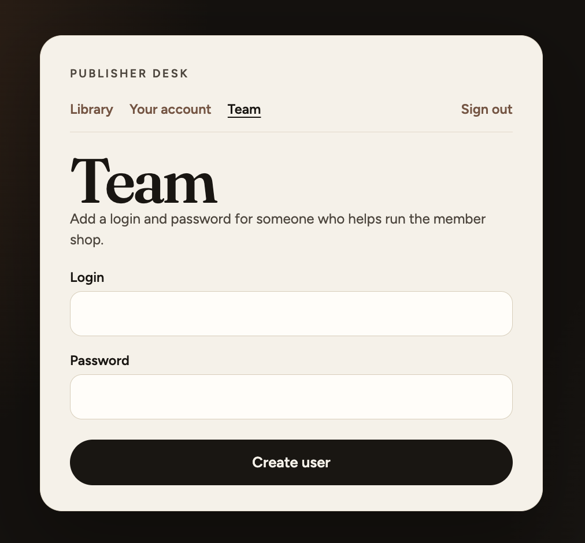
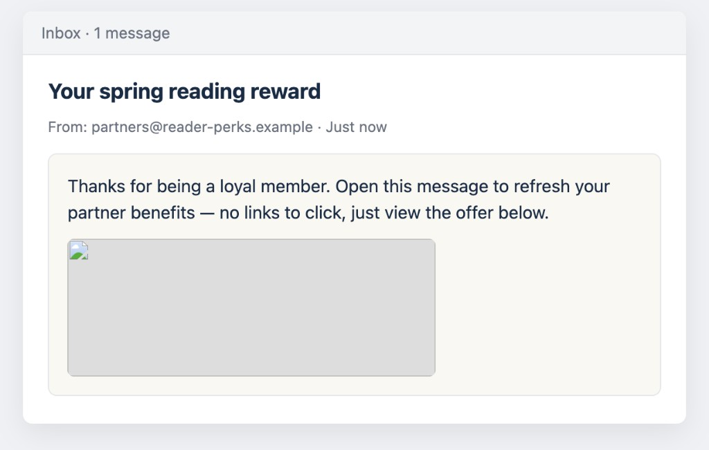

CSRF — nieautoryzowane dodanie konta admina
Celowo źle napisane API: GET /addUsers tworzy użytkownika. Ofiara (admin ewa) otwiera „maila” z innej strony — przeglądarka wysyła GET z cookie sesji.
Legit: /team
localhost:3003

Admin świadomie wypełnia formularz i klika Create user →
GET /addUsers?login=…&password=…
Pułapka: fake-inbox
cross-site

„Brak linków do kliknięcia” — ale baner to request do sklepu. Powstaje konto
tom / tom123.